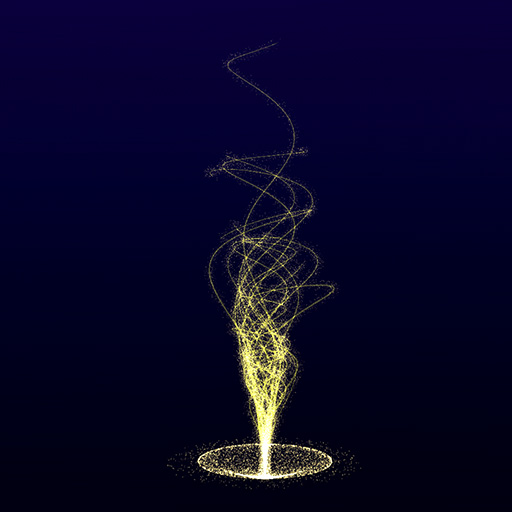
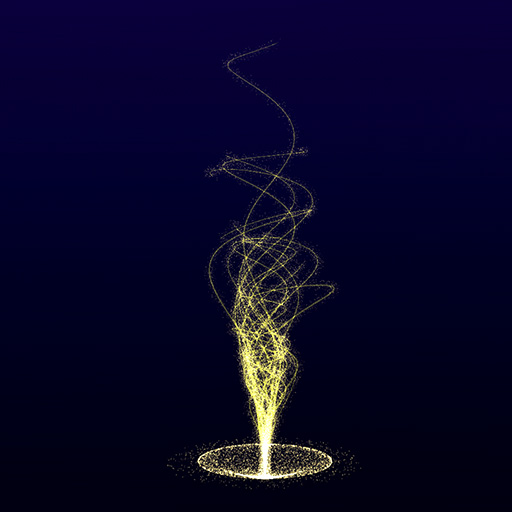
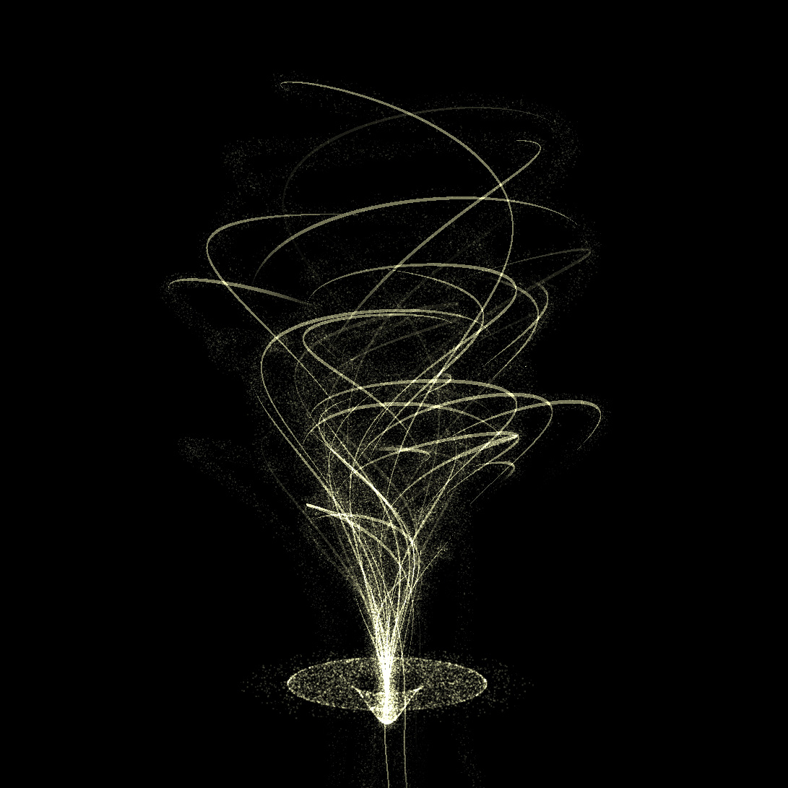
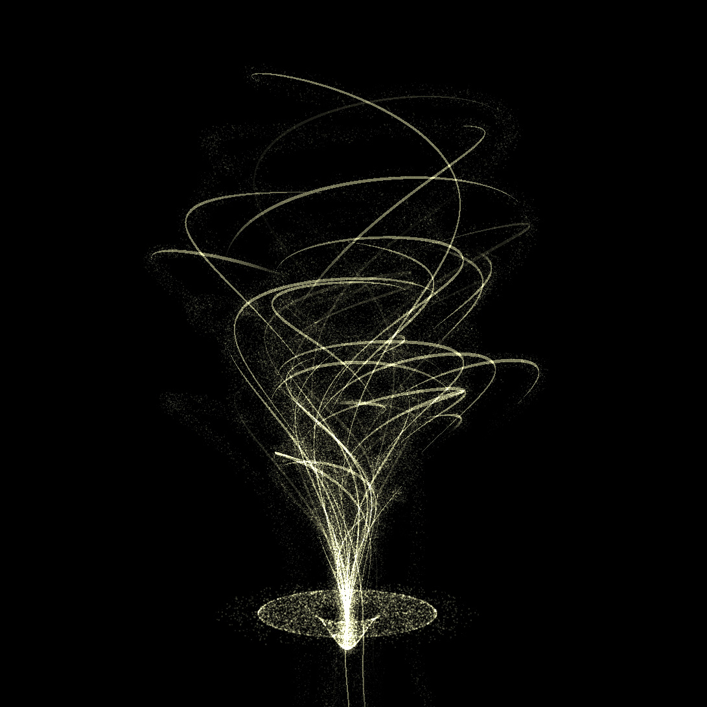
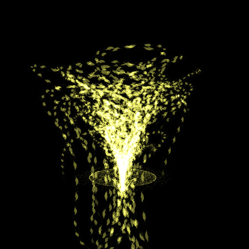
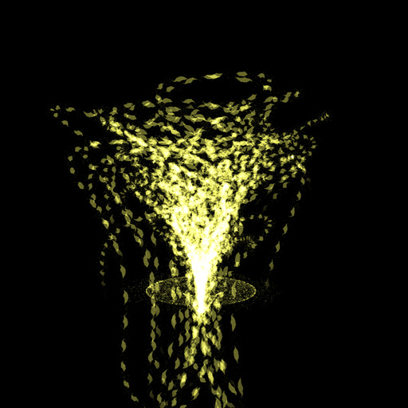

Inspiration
I recently started living in Japan and, during winter, illuminations are beautiful here. Everywhere you go, you can only be enchanted by the lights.
After I finished my first christmasxp "Journey", I wanted to make my own digital version of an illuminated tree.
Work organization
After sketching my idea on paper I splitted the work in fews steps :
- I. Create the particle ground
- II. Create simple shape with lines
- III. Add particles on the lines
- IV. Improving the shape
- V. Making it move
- VI. Add interaction & Optimize for mobile
Below some screenshots taken during the creation process
 

Technical note
This experience is written in coffeescript, use Threejs (v74), MeshLine & custom shaders (glsl). In the technical explanation I assume that you are used to shaders, if you're not, I recommend you this introduction to the shaders by Aerotwist.
The ground
To keep the fairy of christmas illuminations, the ground is done with particles. For performance issues, the movement & curvy shape is managed in the vertex shader and use 2 attributes (custom parameters for each particle): aAngle & aTime, and fews uniforms(parameters for all the material): time, speed, dist & height.
Below the code show you how the particles are placed. It uses the orbit position formula BUT the position Y is managed differently. This way has the advantage of creating better density of particles on the middle & border of a circle than normal 2d geometry with cos/sin formula.
float theta = aAngle.y + aTime;
float phi = aAngle.x + sin(speed*(time+aTime))*.5;
pos.x = aAngle.z * sin( phi ) * cos( theta ) * radius;
pos.z = aAngle.z * sin( phi ) * sin( theta ) * radius;
pos.y = smoothstep(0., dist, distance(pos,vec3(0.))) * height;
radius : ground radius
height : height deformation
dist : distance max for the linear interpolation of height
Create the tree shape
The tree is made of line. A line can be seen as a succession of points connected together. There is many ways to create interesting shape. I was thinking about using 3d bezier line, but I tested a 'simple' approach with angles.
The idea is to have a 3d directional vector (again, given by two angle phi & theta) and add a small value to the previous vector, move in this direction & repeat it. To create diversity, each line starts with different angle and the distance between 2 points vary from a line to another. After tweeking the values, I got a tree shape very close from my sketch :)
To make beautiful line with threejs I used MeshLine from @thespite and I'm very satisfied of it, even if the animation part was tricky as we will see after.
Try yourself to play with parameters ;)
epsilon phi
epsilon theta
radius
lineWidth
function createShape(epsilonTheta,epsilonPhi,radius) {
var steps = 150
var positions = new Float32Array( steps*3 )
var z = 0, x = 0, y = .5, phi = 0, theta = Math.PI*2*Math.random()
for(j=0; j < steps*3; j+=3){
positions[ j ] = x
positions[ j + 1 ] = y
positions[ j + 2 ] = z
x += radius * Math.sin( phi ) * Math.cos( theta )
y += radius * Math.cos( phi )
z += radius * Math.sin( phi ) * Math.sin( theta )
phi += epsilonPhi
theta += epsilonTheta
}
return positions
}
Animate the lines
Then I wanted to animate the lines, but I got performances issues. I realized it came from the process function of MeshLine which update all the attributes & recreate the buffer. Even when I tried to modify it to reuse the same buffer & update only prev/next/position attributes it was still too heavy on mobile.
So, instead of changing the attribute position, I modified the MeshLineMaterial Shader to create a fake movement along the line.
To do so, I added it a uniform time & used the width variable as a "time offset" and not directly as a width.
To reduce the width at the start & end of the line I used smoothstep & the uv.
The width is given by this formula:
line.setGeometry( geometry,function(p){ return p*division })
and the movement created using the width:
//- w is the width
float w = 1.8 * pixelWidth * lineWidth * sin(width+time)*(1.-smoothstep(.9,1.,uv.x*1.));
w *= smoothstep(uv.x*2.,uv.y*2.+2.,-time*2000.);
deltaSpeed
division
So as you can see by changing the division parameter above, each line is actually not only one line, but many line moving along a path. Also, a line doesn't "move", but the sin(width+time) in the shader simulate the movement. It create repeatable movement but solved the performance problem.
Making the particles on the tree
My next step was to add particles on the three, I pushed particles on it by getting a random position on the line using linear interpolation & adding positionOffset to particles.
Show particle only
Well.. Again making it move was the tricky/funky part :D
I couldn’t set their position anymore with javascript for performance issue, so I did it in the vertex shader by passing the line path (the array of points composing the line) as a uniform and a aTime as attribute on each particle. The problem I encountered is the limit of the number of uniforms in a vertex shader (apparently 512). To avoid it I simplified the line path by using less points.
The exact number of points used by each material shader is set in javascript and added dynamically as uniforms at the start of the shader. It's now between 100 to 200points in case some devices have a limit under 256.
//- individual time
float t = (time+aTime*50.)/80.;
//- where we are on the line at this time, start from 1 ( cause need to use the previous point)
float i = mod(t, pathLength)+1.;
//- the percent on the path
float percent = i/pathLength;
//- the percent between the previous and the next point on the path
float extra = mod(i,1.);
//- current index of the point in the path
int ii = int(floor(i));
//- linear interpolation with the previous point on path
pos = mix(path[ii-1], extra*path[ii], extra);
//- reduce the offset position on the end so it converge to the same point (only 20% offset)
pos += aOffset*(1.-smoothstep(0.9, 1., percent)*.8);
Making the particle disappearing smoothly at the end
alpha *= 1.-smoothstep(0.98, 1., percent);
Appear/Disapear
To make it appear/disappear like if it's coming from the ground, I play with the alpha and add a “hide” variable in the shader to control it. Also I inverse & accelerate the delta time when it should hide so it feels like the lines are coming back. Finally I make the branches coming one by one every 50ms. Like this I think it's smoother and more interesting, compared than making them all appear together.
Anim in/out
More optimization
In addition to the previous optimization I removed all depth test, used objects pool & reduced the number of particles/line/points on mobile.
Conclusion
 
 

I'm happy with the visual result of this experiment & I had fun experimenting around Meshline, learning a lot in a short amount of time. The hardest point was to make it move smoothly on mobile and "hack" Meshline, but... it was worth it :)
Some links if you want to learn more about MeshLine & Shaders:
And... Done! :) Every feedbacks about this article will be appreciated. As well, if you have any questions, feel free to contact me via my twitter :)
THANKS!
Share this article if you liked it! :)